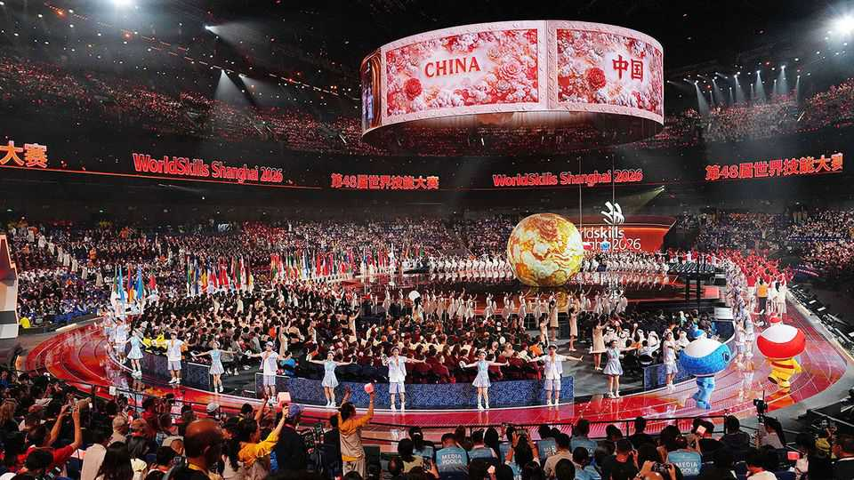

China lavishes attention on a little-known competition
It sees the “skills Olympics” as a chance to boost its power

Oct 1st 2026
Once again Team China has crushed its rivals. At the WorldSkills Competition it won a record 41 gold medals, ten times as many as South Korea, the runner-up. Never heard of the event? In China it was hard to ignore: the six-day extravaganza, which wrapped up in Shanghai on September 27th, involved some 1,400 young people from 60-odd countries competing before panels of judges amid Olympic-style razzmatazz (and as is now standard at show-off events in China: dancing robots).
This was no sporting jamboree, however. Participants were tested on skills like bricklaying, machining and landscape gardening. The tournament rarely makes headlines in the West. But China has poured more resources into it than anyone else. It sees benefits far beyond the arena.
Spain launched the competition in 1950 to encourage more young people to start apprenticeships. It was not until 2011 that China began to take part. Then it won just a single medal, a silver in welding. Now it routinely dominates the event, which is held every two years. Competitors have to complete tasks in their discipline, such as installing, testing and repairing a wind-turbine component. They are given points for such things as speed and precision. Drone piloting and cyber-security were among new categories added this year. China won golds in both (though not in landscape gardening: France came first).
As it does in producing Olympic stars, China’s government plays a big role. Promising young people are filtered through local, provincial and national contests before entering an elaborate training system. China has designated hundreds of bases—at vocational colleges, universities and companies—where contestants drill their skills under specialist coaches, sometimes including past champions, and receive physical and psychological preparation.
The proud coach of He Xiaoman, a 20-year-old gold-medal winner in the train inspection, maintenance and repair category, attributed her success to “countless nights spent alone at the training base”. China is “unique in the resolve and scale of its embrace of WorldSkills”, noted a slightly awestruck report by the organisation.
One pay-off that China wants is a boost to national pride. State-run media broadcast daily coverage of the competition in Shanghai, the first ever in China. They focused on events linked to China’s industrial strengths (like drone-making), and winners draped in China’s crimson flag. “Seeing the dazzling red of China makes my blood dance with excitement!” said a commenter on Weibo, a social-media platform.
China also uses the competitions to project soft power. They help advertise its “Luban workshops” in poorer countries: vocational-training centres named after a mythical Chinese carpenter. The institutions are not just a diplomatic sweetener. They promote technology and standards that China wants to export. Medals at this year’s WorldSkills contest were in the shape of “Luban locks”: wooden puzzles supposedly created by the man himself. At the opening ceremony, Li Qiang, the prime minister, called for more co-operation on skills-building with the global south.
China has another goal: getting more of its people into vocational training. Many Chinese look down on vocational colleges, which are often underfunded and badly staffed. Last year the government warned of a 10m shortfall in skilled workers. Many young Chinese seem happy enough to cheer on their best workers, but do not want to join them in the factory. ■
Subscribers can sign up to Drum Tower, our new weekly newsletter, to understand what the world makes of China—and what China makes of the world.